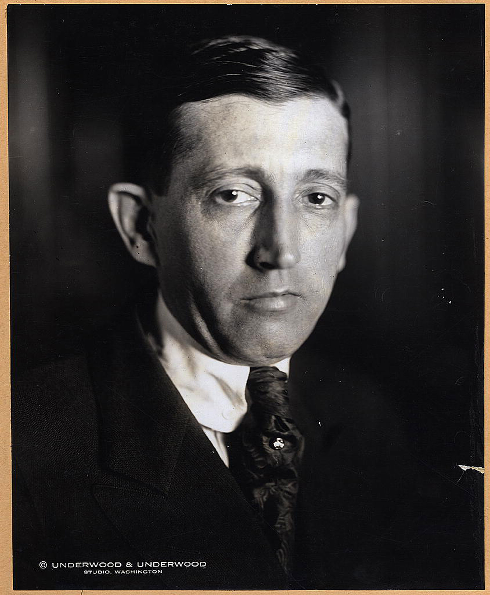
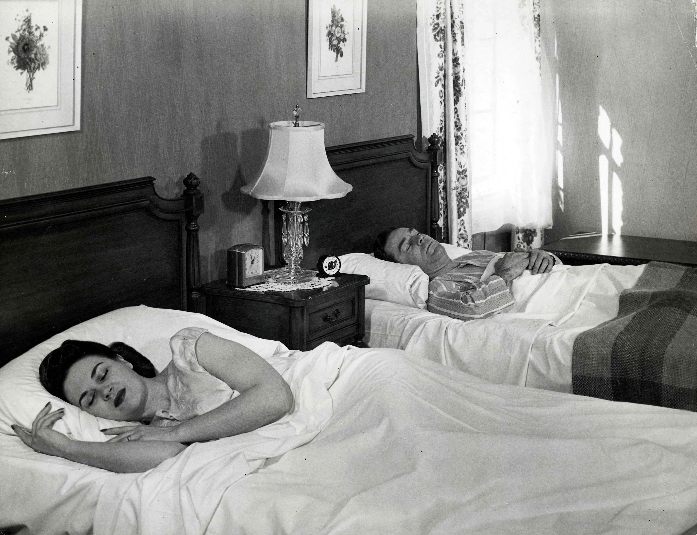

Figure 15.1

In May 2010, the social networking website Facebook was thrown into the news when its chief executive officer, Mark Zuckerberg, announced new changes to the site’s privacy policy. Although the announcement alone did not necessarily garner heavy attention from the news media, the involvement of the Federal Trade Commission (FTC) ramped up public interest.
The previous month, several watchdog groups had sent letters to Congress and the FTC asking for an investigation of Facebook’s privacy policy. The letters attacked the site’s privacy policies, which dated from December 2009 and had been designed to provide users more control over privacy settings. However, PC Magazine noted, “given Facebook’s move toward a more open format as it integrates status updates with search engines like Google and Bing, the site encouraged its users to make more of their data public, and made some of the default settings more open.”Chloe Albanesius, “Facebook Prepping Changes to Privacy Policy,” PC Magazine, May 21, 2010, http://www.pcmag.com/article2/0,2817,2364063,00.asp.
Essentially, Facebook provides three default options for sharing information: with “everyone,” “friends of friends,” or “friends only.” Zuckerberg explained the privacy policy by saying:
We recommended that there be large pieces of information in each of these buckets. For friends only, that’s all of the really sensitive stuff. For friends of friends, it could be who can see the photos and videos of you, which is actually the majority of the content people share on the site. And then for everyone, it’s basic information and status updates and posts like that.Dan Fletcher, “Time’s Q&A With Facebook CEO Mark Zuckerberg,” Time NewsFeed (blog), Time, May 27, 2010, http://newsfeed.time.com/2010/05/27/times-qa-with-facebook-ceo-mark-zuckerberg/
Concern grew that some of Facebook’s default privacy settings allowed everyone, regardless of their level of connection to a user, to access some personal information. In their open letter to Congress, privacy watchdog groups addressed these concerns by stating, “Facebook continues to manipulate the privacy settings of users and its own policy so that it can take personal information provided by users for a limited purpose and make it widely available for commercial purposes…. The company has done this repeatedly and users are becoming increasingly angry and frustrated.”Mark Hachman, “Facebook Targeted by New FTC Privacy Complaint,” PC Magazine, May 7, 2010, http://www.pcmag.com/article2/0,2817,2363518,00.asp. In light of users’ outrage, the letter asked the FTC to get involved.
The FTC is a congressional commission designed to oversee and enforce consumer protections. Despite—or perhaps because of—this stated goal, the FTC’s lack of involvement in Facebook’s privacy settings frustrated many individuals; one letter to Congress “openly worried that the FTC either lacked the power or the motivation to pursue questions of privacy at Facebook.”Mark Hachman, “Facebook Targeted by New FTC Privacy Complaint,” PC Magazine, May 7, 2010, http://www.pcmag.com/article2/0,2817,2363518,00.asp. The FTC responded that the issue was of “particular interest” to them, but as of this writing, no official action has been taken.
The issue has prompted a broader discussion of the government’s role in regulating information disseminated on the Internet. The New York Times articulated the discussion’s central questions: “What can government do to ensure that users have control of their own information, which might live on indefinitely on the web? Would regulation work? Or should government stay out of this arena?”New York Times, “Should Government Take On Facebook?” Room for Debate (blog), May 25, 2010, http://roomfordebate.blogs.nytimes.com/2010/05/25/should-government-take-on-facebook/. Facebook stands by the rights of its users, arguing that “adult users should be free to publish information about their lives if they choose to do so.”New York Times, “Should Government Take On Facebook?” Room for Debate (blog), May 25, 2010, http://roomfordebate.blogs.nytimes.com/2010/05/25/should-government-take-on-facebook/. However, Facebook did respond to the open letter and modified its privacy settings to make it easier for individuals to control their online identities. Yet the debate continues over online privacy and the government’s role in maintaining this privacy. The recent buzz over Facebook’s privacy policies is just one of many examples of the debate over government’s place in the world of media. How is copyright protected across different media outlets? What material is considered appropriate for broadcast? Does the U.S. government have the right to censor information? This chapter explores these and other questions regarding the long and complex relationship between media and the government.
The U.S. federal government has long had its hand in media regulation. Media in all their forms have been under governmental jurisdiction since the early 1900s. Since that time, regulatory efforts have transformed as new forms of media have emerged and expanded their markets to larger audiences.
Throughout the 20th century, three important U.S. regulatory agencies appeared. Under the auspices of the federal government, these agencies—the FTC, the Federal Radio Commission (FRC), and the FCC—have shaped American media and their interactions with both the government and audiences.
The first stirrings of the FTC date from 1903, when President Theodore Roosevelt created the Bureau of Corporations to investigate the practices of increasingly larger American businesses. In time, authorities determined that an agency with more sweeping powers was necessary. Founded on September 26, 1914, the FTCThe government agency charged with overseeing interstate business and trade practices in the United States. came into being when President Woodrow Wilson signed the FTC Act into law, creating an agency designed to “prevent unfair methods of competition in commerce.”Federal Trade Commission, “About the Federal Trade Commission,” http://ftc.gov/ftc/about.shtm. From the beginning, the FTC absorbed the work and staff of the Bureau of Corporations, operating in a similar manner, but with additional regulatory authorization. In the words of the FTC,
Like the Bureau of Corporations, the FTC could conduct investigations, gather information, and publish reports. The early Commission reported on export trade, resale price maintenance, and other general issues, as well as meat packing and other specific industries. Unlike the Bureau, though, the Commission could … challenge “unfair methods of competition” under Section 5 of the FTC Act, and it could enforce … more specific prohibitions against certain price discriminations, vertical arrangements, interlocking directorships, and stock acquisitions.“A Brief History of the Federal Trade Commission,” program notes, Federal Trade Commission 90th Anniversary Symposium, 6.
Although its primary focus was on the prevention of anticompetitive business practices, in its early years, the FTC also provided oversight on wartime economic practices. During World War I, for example, President Wilson frequently turned to the FTC for advice on exports and trading with foreign nations, resulting in the Trading with the Enemy Act, which restricted trade with countries in conflict with the United States.
First established with the passage of the Radio Act of 1927, the FRC was intended to “bring order to the chaotic situation that developed as a result of the breakdown of earlier wireless acts passed during the formative years of wireless radio communication.”Fritz Messere, “The Federal Radio Commission Archives,” http://www.oswego.edu/~messere/FRCpage.html. The FRC comprised five employees who were authorized to grant and deny broadcasting licenses and assign frequency ranges and power levels to each radio station.
In its early years, the FRC struggled to find its role and responsibility in regulating the radio airwaves. With no clear breakdown of what could or could not be aired, nearly everything was allowed to play. As you learned in Chapter 7 "Radio", the FRC lasted only until 1934, when it was engulfed by the FCC.
Figure 15.2
President Franklin D. Roosevelt established the Federal Communications Commission in 1934 as part of the New Deal.
Since its creation by the Communications Act in 1934, the FCCThe government agency charged with overseeing interstate communications in the United States. has been “charged with regulating interstate and international communications by radio, television, wire, satellite and cable.”Federal Communications Commission, “About the FCC,” http://www.fcc.gov/aboutus.html. Part of the New Deal—President Franklin D. Roosevelt’s Great Depression–era suite of federal programs and agencies—the commission worked to establish “a rapid, efficient, Nation-wide, and world-wide wire and radio communication service.”Museum of Broadcast Communications, “Federal Communications Commission,” http://www.museum.tv/eotvsection.php?entrycode=federalcommu.
The responsibilities of the FCC are broad, and throughout its long history the agency has enforced several laws that regulate media. A selection of these laws include the 1941 National TV Ownership Rule, which states that a broadcaster cannot own television stations that reach more than 35 percent of the nation’s homes; the 1970 Radio/TV Cross-Ownership Restriction, which prohibits a broadcaster from owning a radio station and a TV station in the same market; and the 1975 Newspaper/Broadcast Cross-Ownership Prohibition, which discourages ownership of a newspaper and a television station in the same market.“Media Regulation Timeline,” NOW With Bill Moyers, PBS, January 30, 2004, http://www.pbs.org/now/politics/mediatimeline.html. All of these acts and more have undergone changes in the modern media marketplace.
Today, the FCC continues to hold the primary responsibility for regulating media outlets, with the FTC taking on a smaller role. Although each commission holds different roles and duties, the overall purpose of governmental control remains to establish and bring order to the media industry while ensuring the promulgation of the public good. This section examines the modern duties of both commissions.
The FCC contains three major divisions: broadcast, telegraph, and telephone. Within these branches, subdivisions allow the agency to more efficiently carry out its tasks. Presently, the FCC houses seven operating bureaus and 10 staff offices. Although the bureaus and offices have varying specialties, the bureaus’ general responsibilities include “processing applications for licenses and other filings; analyzing complaints; conducting investigations; developing and implementing regulatory programs; and taking part in hearings.”Federal Communications Commission, “About the FCC,” http://www.fcc.gov/aboutus.html. Four key bureaus are the Media Bureau, the Wireline Competition Bureau, the Wireless Telecommunications Bureau, and the International Bureau.
The Media Bureau oversees licensing and regulation of broadcasting services. Specifically, the Media Bureau “develops, recommends and administers the policy and licensing programs relating to electronic media, including cable television, broadcast television, and radio in the United States and its territories.”Federal Communications Commission, “Media Bureau,” http://www.fcc.gov/mb/. Because it aids the FCC in its decisions to grant or withhold licenses from broadcast stations, the Media Bureau plays a particularly important role within the organization. Such decisions are based on the “commission’s own evaluation of whether the station has served in the public interest,” and come primarily from the Media Bureau’s recommendations.Museum of Broadcast Communications, “Federal Communications Commission.” The Media Bureau has been central to rulings on children’s programming and mandatory closed captioning.
The Wireline Competition Bureau (WCB) is primarily responsible for “rules and policies concerning telephone companies that provide interstate—and, under certain circumstances, intrastate—telecommunications services to the public through the use of wire-based transmission facilities (i.e. corded/cordless telephones).”Federal Communications Commission, “About the FCC,” http://www.fcc.gov/aboutus.html. Despite the increasing market for wireless-based communications in the United States, the WCB maintains its large presence in the FCC by “ensuring choice, opportunity, and fairness in the development of wireline telecommunications services and markets.”Federal Communications Commission, “Wireline Competition Bureau,” http://www.fcc.gov/wcb/. In addition to this primary goal, the bureau’s objectives include “developing deregulatory initiatives; promoting economically efficient investment in wireline telecommunications services; and fostering economic growth.”Federal Communications Commission, “Wireline Competition Bureau,” http://www.fcc.gov/wcb/. The WCB recently ruled against Comcast regarding blocked online content to the public, causing many to question the amount of authority that the government has over the public and big businesses.
Another prominent bureau within the FCC is the Wireless Telecommunications Bureau (WTB). The rough counterpart of the WCB, this bureau oversees mobile phones, pagers, and two-way radios, handling “all FCC domestic wireless telecommunications programs and policies, except those involving public safety, satellite communications or broadcasting, including licensing, enforcement, and regulatory functions.”Federal Communications Commission, “About the WTB,” http://wireless.fcc.gov/index.htm?job=about. The WTB balances the expansion and limitation of wireless networks, registers antenna and broadband use, and manages the radio frequencies for airplane, ship, and land communication. As U.S. wireless communication continues to grow, this bureau seems likely to continue to increase in both scope and importance.
Finally, the International Bureau is responsible for representing the FCC in all satellite and international matters. A larger organization, the International Bureau’s goal is to “connect the globe for the good of consumers through prompt authorizations, innovative spectrum management and responsible global leadership.”Federal Communications Commission, “International Bureau,” http://www.fcc.gov/ib/. In an effort to avoid international interference, the International Bureau coordinates with partners around the globe regarding frequency allocation and orbital assignments. It also concerns itself with foreign investment in the United States, ruling that outside governments, individuals, or corporations cannot own more than 20 percent of stock in a U.S. broadcast, telephone, or radio company.
Although the FCC provides most of the nation’s media regulations, the FTC also has a hand in the media industry. As previously discussed, the FTC primarily dedicates itself to eliminating unfair business practices; however, in the course of those duties it has limited contact with media outlets.
One example of the FTC’s media regulatory responsibility is the National Do Not Call Registry. In 2004, the agency created this registry to prevent most telemarketing phone calls, exempting such groups as nonprofit charities and businesses with which a consumer has an existing relationship. Although originally intended for landline phones, the Do Not Call Registry allows individuals to register wireless telephones along with traditional wire-based numbers.
As discussed in Chapter 13 "Economics of Mass Media", the federal government has long regulated companies’ business practices. Over the years, several antitrust acts (law discouraging the formation of monopolies) have been passed into law.
During the 1880s, Standard Oil was the first company to form a trust (a unit of business made up of a board of trustees, formed to monopolize an industry), an “arrangement by which stockholders … transferred their shares to a single set of trustees.”“Sherman Antitrust Act (1890),” http://www.ourdocuments.gov/doc.php?flash=old&doc=51. With corporate trustees receiving profits from the component companies, Standard Oil functioned as a monopoly (a business that economically controls a product or a service). The Sherman Antitrust Act was put into place in 1890 to dissolve trusts such as these. The Act stated that any combination “in the form of trust or otherwise that was in restraint of trade or commerce among the several states, or with foreign nations” was illegal.“Sherman Antitrust Act (1890),” http://www.ourdocuments.gov/doc.php?flash=old&doc=51.
The Sherman Antitrust Act served as a precedent for future antitrust regulation. As discussed in Chapter 13 "Economics of Mass Media", the 1914 Clayton Antitrust Act and the 1950 Celler-Kefauver Act expanded on the principles laid out in the Sherman Act. The Clayton Act helped establish the foundation for many of today’s business and media competition regulatory practices. Although the Sherman Act established regulations in the United States, the Clayton Act further developed the rules surrounding antitrust, giving businesses a “fair warning” about the dangers of anticompetitive practice.Brian Gongol, “The Clayton Antitrust Act,” February 18, 2005, http://www.gongol.com/research/economics/claytonact/. Specifically, the Clayton Act prohibits actions that may “substantially lessen competition or tend to create a monopoly in any line of commerce.”Brian Gongol, “The Clayton Antitrust Act,” February 18, 2005, http://www.gongol.com/research/economics/claytonact/.
The problem with the Clayton Act was that, while it prohibited mergers, it offered a loophole in that companies were allowed to buy individual assets of competitors (such as stocks or patents), which could still lead to monopolies. Established in 1950 and often referred to as the Antimerger Act, the Cellar-Kefauver Act closed that loophole by giving the government the power to stop vertical mergers. (Vertical mergers happen when two companies in the same business but on different levels—such as a tire company and a car company—combine.) The act also banned asset acquisitions that reduced competition.“Celler-Kefauver Antimerger Act,” http://financial-dictionary.thefreedictionary.com/Celler-Kefauver+Antimerger+Act.
These laws reflected growing concerns in the early and mid-20th century that the trend toward monopolization could lead to the extinction of competition, thus leading to less choice and potentially higher prices. Government regulation of businesses increased until the 1980s, when the United States experienced a shift in mind-set and citizens called for less governmental power. The U.S. government responded as deregulation became the norm.
Media deregulation actually began during the 1970s as the FCC shifted its approach to radio and television regulation. Begun as a way of clearing laws to make the FCC run more efficiently and cost effectively, deregulation truly took off with the arrival of the Reagan administration and its new FCC chairman, Mark Fowler, in 1981. The FCC began overturning existing rules and experienced “an overall reduction in FCC oversight of station and network operations.”Museum of Broadcast Communications, “Deregulation,” http://www.museum.tv/eotvsection.php?entrycode=deregulation. Between 1981 and 1985, lawmakers dramatically altered laws and regulation to give more power to media licensees and to reduce that of the FCC. Television licenses were expanded from three years to five, and corporations were now allowed to own up to 12 separate television stations.
The shift in regulatory control had a powerful effect on the media landscape. Whereas initially laws had prohibited companies from owning media entities in more than one medium, consolidation created large mass-media companies that increasingly dominated the U.S. and global media system. Before the increase in deregulation, eight major companies controlled phone services to different regions of the United States. Today, however, there are four.Gene Kimmelman, “Deregulation of Media: Dangerous to Democracy,” Consumers Union, http://www.consumersunion.org/telecom/kimmel-303.htm. Companies such as Viacom and Disney own television stations, record companies, and magazines. Bertelsmann alone owns more than 30 radio stations, 280 publishing outlets, and 15 record companies.Columbia Journalism Review, “Resources: Who Owns What,” http://www.cjr.org/resources/?c=bertelsmann. Due to this rapid consolidation, Congress grew concerned about the costs of deregulation, and by the late 1980s, it began to slow the FCC’s release of control.
Today, deregulation remains a hotly debated topic. Some favor deregulation, believing that the public benefits from less governmental control. Others, however, argue that excessive consolidation of media ownership threatens the system of checks and balances.Gene Kimmelman, “Deregulation of Media: Dangerous to Democracy,” Consumers Union, http://www.consumersunion.org/telecom/kimmel-303.htm. Proponents on both sides of the argument are equally vocal, and it is likely that regulation of media will ebb and flow over the years, as it has since regulation first came into practice.
Is what you see on the Internet being censored? In Chapter 11 "The Internet and Social Media", you read about the debate between the search engine Google and China. However, Internet censorship is much more widespread, affecting people from Germany to Thailand to the United States. And now, thanks to a new online service, you can see for yourself.
In September 2010, Google launched its new web tool, Google Transparency. This program allows users to see a map of online censorship around the world. With this tool, people can view the number of times a country requests data to be removed, what kind of data they request be removed, and the percentage of requests that Google complies with. In some cases, the content is minor—YouTube videos that violate copyright, for example, are frequent offenders. In other cases, the requests are more formidable; Iran blocked all of YouTube after the disputed 2009 elections, and Pakistan blocked the site for more than a week in response to a 2010 online protest. Perhaps most surprising is the amount of requests from countries not normally associated with strict censorship. Germany, for example, has banned content it deems to be affiliated with neo-Nazism, and Thailand refuses to allow videos of its king that it finds offensive. Between January and June 2010, the United States asked Google 4,287 times for information regarding its users, and sent 128 requests to the search engine to remove data. Eighty percent of the time, Google complied with the requests for data removal. John D. Sutter, “Google: Internet freedom is declining,” CNN, September 21, 2010, http://articles.cnn.com/2010-09-21/tech/google.transparency_1_internet-censorship-google-maps-internet-freedom?_s=PM:TECH.
What is the general trend in Internet censorship? According to Google, it’s becoming more and more commonplace every year. However, the search engine hopes that its new tool will combat this trend. A spokesperson for the company said, “The openness and freedom that have shaped the internet as a powerful tool has come under threats from governments who want to control that technology.” By giving users access to censorship numbers, Google allows them to witness the amount of Internet censorship that they are subject to in their everyday lives. As censorship increases, many predict that citizen outrage will increase as well. The future of Internet censorship may be unsure, but for now, at least, the numbers are visible to all.John D. Sutter, “Google: Internet freedom is declining,” CNN, September 21, 2010, http://articles.cnn.com/2010-09-21/tech/google.transparency_1_internet-censorship-google-maps-internet-freedom?_s=PM:TECH.
Visit the FCC’s web page (http://www.fcc.gov/) and explore some of the regulations that currently exist. Think about television or radio programs that you watch or listen to. Then write a one-page paper addressing the following:
Media law has been a much-debated topic ever since the first U.S. media industry laws appeared in the early 1900s. The contention surrounding media law largely stems from the liberties guaranteed under the First Amendment of the U.S. Constitution, which includes the freedom of the press.
Generally speaking, media law comprises two areas: telecommunications law, which regulates radio and television broadcasts, and print law, which addresses publications such as books, newspapers, and magazines. Despite differences between the two areas, many media laws involve First Amendment protections. This section explores several areas of media law: privacy, libel and slander, copyright and intellectual property, freedom of information, and equal time and coverage.
Privacy, as you have likely noticed, has been a theme in many chapters. The media and privacy intersect in many arenas, including the legal arena. In 1974, Congress passed the Privacy ActA piece of legislation designed to protect how individuals’ personal information is collected, used, and published., which “protects records that can be retrieved by personal identifiers such as a name, social security number, or other identifying number or symbol.”U.S. Department of Health and Human Services, “The Privacy Act,” http://www.hhs.gov/foia/privacy/index.html. This act also regulates how agencies can collect, store, and use information and requires agencies to tell individuals when they are collecting information about them. Designed to ensure that all First Amendment guarantees remain honored, the act requires all public and private agencies to function within its boundaries.
Under the Privacy Act, media personnel must be careful to avoid revealing certain information about an individual without his or her permission, even if that portrayal is factually accurate. Privacy laws, including the Privacy Act, “limit … your ability to publish private facts about someone and recognize … an individual’s right to stop you from using his or her name, likeness, and other personal attributes for certain exploitative purposes.”Citizen Media Law Project, “Publishing Personal and Private Information,” http://www.citmedialaw.org/legal-guide/publishing-personal-and-private-information. Members of the media can avoid the pitfalls of privacy laws by maintaining a professional relationship with the community upon which they report. To avoid liability, journalists and other media professionals are encouraged to report or comment only on “matters of legitimate public interest and only portray people who have a reasonable relationship to [their] topic.”Citizen Media Law Project, “Publishing Personal and Private Information,” http://www.citmedialaw.org/legal-guide/publishing-personal-and-private-information. In 2005, a legal dispute arose between congressional aides Robert Steinbuch and Jessica Cutler. Steinbuch sued Cutler for publishing information about their intimate relationship; however, the case was dismissed when the court decided that Cutler had only provided facts that were already publically known.Citizen Media Law Project, “Publication of Private Facts,” http://www.citmedialaw.org/legal-guide/publication-private-facts.
Media outlets also must be wary of committing acts of defamation. These occur when false statements that can harm a reputation are printed, broadcast, spoken, or otherwise communicated to others. Two different types of legal protections, libelDefamatatory statements or visual depictions in writen or permanent form. and slanderDefamatatory verbal statements. laws, exist to prevent such defamation from taking place and can extend to individuals, groups, and even companies. Although defamation encompasses both categories, they are separate concepts. Libel refers to written statements or printed visual depictions, while slander refers to verbal statements and gestures.Media Law Resource Center, “Frequently Asked Media Law Questions,” http://www.medialaw.org/Content/NavigationMenu/Public_Resources/Libel_FAQs/Libel_FAQs.htm. State jurisdiction largely covers libel and slander laws, but they are nearly identical throughout the United States.
As with privacy laws, print and broadcast journalists can protect themselves from defamation lawsuits by carrying out responsible reporting. Media personnel are legally protected when communicating a report outweighs any potential damage to a person’s reputation. However, when journalists do not report responsibly, the legal and financial consequences can be devastating. In the 2007 case Murphy vs. Boston Herald, the Boston Herald newspaper was sued for misquoting Massachusetts Superior Court Judge Ernest Murphy. The court ruled that the false quote was published with a malicious intent and awarded Murphy $2.1 million in damages.Barbara W. Wall, “News Watch: Boston Newspapers Suffer Setbacks in Libel Cases,” Gannett, http://159.54.227.112/go/newswatch/2005/april/nw0401-4.htm. In the more famous case of Linda Tripp in 1998, Tripp was charged with secretly recording phone conversations between herself and Monica Lewinsky, who had a sexual relationship with President Bill Clinton. Tripp faced a prison sentence of 10 years for slander and illegal documentation; however, the case was dropped in early 2000 due to witness bias.Don Van Natta Jr., “Maryland Is Dropping Wiretap Case against Tripp,” New York Times, http://www.nytimes.com/2000/05/25/us/maryland-is-dropping-wiretap-case-against-tripp.html. More recently, David and Victoria Beckham sued their former nanny for telling the tabloids that their marriage is in trouble. The nanny’s contract contained an agreement not to talk about the celebrity couple’s private lives.CBS News, “Beckham’s Sue Former Nanny,“ February 11, 2009, http://www.cbsnews.com/stories/2005/04/26/entertainment/main691003.shtml
Copyright laws fall under federal jurisdiction and are, therefore, identical across the country. As you learned in Chapter 4 "Newspapers", Congress first established U.S. copyright and patent protections in 1790 and, despite revisions and updates, has maintained some form of copyright law to this day. With coverage of a wide range of materials, copyright law encompasses “almost all creative work that can be written down or otherwise captured in a tangible medium.”Citizen Media Law Project, “Copyright,” http://www.citmedialaw.org/legal-guide/copyright. This includes literary works; musical works; dramatic works; pictorial, graphic, and sculptural works; motion pictures and other audiovisual works; sound recordings; and even architectural works. Once a work has achieved copyright, the copyright owner must grant permission for that work to be legally reproduced. After a certain number of years, a copyright expires and the work enters the public domain.
Copyright does not, however, protect facts. This is of particular importance for news media. Despite the length of time it takes to uncover facts, no individual or company can own them. Anyone may repeat facts as long as that person does not copy the written story or broadcast in which those facts were communicated.
Intellectual property law protects “products of the mind,” including copyrights, patents, open licenses, trademarks, trade secrets, URLs, domain names, and even components of television programs (as David Letterman found out when he moved from NBC to CBS, and was forced to leave certain aspects of his television show behind). Intellectual property law generally follows the same guidelines as copyright law, and the associated legislation seeks “to encourage innovation and creativity, with an ultimate aim of promoting a general benefit to society.”Citizen Media Law Project, “Intellectual Property,” http://www.citmedialaw.org/legal-guide/intellectual-property. The role of copyright and intellectual property in the mass media will be covered in greater detail later in this chapter.
President Lyndon B. Johnson first signed the Freedom of Information ActA piece of legislation that permits the public at large, including the news media, to request access to many government documents. (FOIA) into law in 1966. By requiring full or partial disclosure of U.S. government information and documents, the act “helps the public keep track of its government’s actions, from the campaign expenditures of city commission candidates to federal agencies’ management of billions of dollars in tax revenues.”Citizen Media Law Project, “Access to Government Records,” http://www.citmedialaw.org/legal-guide/access-government-records. Because it allows everyone access to federal documents and information that otherwise would go unreleased, FOIA is particularly important for those working in the news media.
Although the act covers a large range of agencies, some offices are exempt from FOIA. The act provides access to the public records of the executive branch of the U.S. government but does not include documents from the current president, Congress, or the judicial branch.Citizen Media Law Project, “Access to Records from the Federal Government,” http://www.citmedialaw.org/legal-guide/access-records-from-federal-government. Because FOIA pertains to individuals and information in high levels of government, the process of accessing information can be complicated. Those who are interested must become skilled at navigating the complex set of procedures to offer citizens accurate information. Although FOIA allows any person for any reason access to the records, journalists who work for mainstream media organizations often receive perks such as the waiving of fees and expedited processing.Citizen Media Law Project, “Who Can Request Records Under FOIA,” http://www.citmedialaw.org/legal-guide/who-can-request-records-under-foia.
Falling under broadcast regulations, the Communication Act’s Section 315A component of the Communications Act of 1934 that requires broadcast media to offer equal opportunity of broadcast time to candidates.—also known as the Equal Time Rule—requires radio and television stations to give equal opportunity for airtime to all candidates. Essentially, Section 315 ensures that television and radio stations cannot favor any one political candidate over another.
Passed by Congress in 1927, the equal opportunity requirement was the first major federal broadcasting law. Legislators feared that broadcasters and stations would be able to manipulate elections by giving one candidate ample air time. Although candidates cannot receive free airtime unless their opponents do as well, the law doesn’t take into consideration campaign funding. Well-funded candidates who can afford to pay for airtime still have an advantage over their poorly funded peers. Controversies over campaign financing are directly tied to the high cost of political campaign advertising, especially over television.
News programs, interviews, and documentaries are exempt from the requirements of Section 315. This allows media outlets to report on the activities of a candidate without also having to cover the activities of his or her opponent. Presidential debates fall under this exemption as well and are not required to include third-party candidates.
Section 315 also prohibits media from censoring what a candidate says or presents on air. Recently there has been controversy over campaign ads picturing aborted fetuses. Citing Section 315, the FCC allowed these television ads to continue to run.Museum of Broadcast Communications, “Equal Time Rule: U.S. Broadcasting Regulatory Rule,” http://www.museum.tv/eotvsection.php?entrycode=equaltimeru.
As discussed in Chapter 7 "Radio", the Fairness Doctrine was enacted in 1949, when applications for radio broadcast licenses outpaced the number of available frequencies. At the time, concerns that broadcasters might use their stations to promote a particular perspective encouraged the creation of the radio-specific version of Section 315. The FCC thus instituted the Fairness Doctrine to “ensure that all coverage of controversial issues by a broadcast station be balanced and fair.”Museum of Broadcast Communications, “Fairness Doctrine,” http://www.museum.tv/eotvsection.php?entrycode=fairnessdoct.
The FCC took the view … that station licensees were “public trustees,” and as such had an obligation to afford reasonable opportunity for discussion of contrasting points of view on controversial issues. The commission later held that stations were also obligated to actively seek out issues of importance to their community and air programming that addressed those issues.Museum of Broadcast Communications, “Fairness Doctrine,” http://www.museum.tv/eotvsection.php?entrycode=fairnessdoct.
The Fairness Doctrine was considered controversial among journalists who felt that it infringed on the rights of free speech and freedom of press granted in the First Amendment. The doctrine was dissolved during the 1980s with the Reagan administration’s deregulatory efforts. We can see these effects today with the popularity of political talk radio. Stations do not have to assure that all sides of an issue are discussed.
In 1998, Congress passed the Digital Millennium Copyright Act (DMCA) to bring order to the then-largely-unregulated online arena. As discussed in Chapter 13 "Economics of Mass Media", the DMCA prohibits individuals from either circumventing access-control measures or trafficking devices that may help others circumvent copyright measures. Under this act, it is illegal to use code-cracking devices to illegally copy software, and websites are required to take down material that infringes on copyrights. (You’ve experienced this regulation yourself if you’ve ever visited YouTube or Google Video and found that a video has been removed due to copyright claims.)
The DMCA does allow webcasting (the broadcasting of media over the Internet) as long as webcasters pay licensing fees to the companies that own the material. This allows sites such as Hulu to legally stream movies and television shows to viewers. The DMCA also protects institutes of higher education, including distance-learning programs, from certain copyright liabilities.Online Institute for Cyberspace Law and Policy, “The Digital Millennium Copyright Act,” UCLA, http://www.gseis.ucla.edu/iclp/dmca1.htm.
One of the most controversial aspects of the DMCA is that, while it requires websites to remove copyrighted material, it does not require websites to monitor their content. A 3-year-long court battle between media giant Viacom and the Google-owned website YouTube was recently waged over this factor. Viacom argued that YouTube infringed on its rights by hosting copyrighted videos. Google responded that while YouTube may include copyrighted material, it is not required to scan every user-uploaded video for copyright infringement. When a claim is brought against a YouTube video, the video is removed—beyond that, the website is not responsible for content. The judge ruled in favor of Google, stating that it was indeed protected under the DMCA. While many saw this as a victory for Internet freedom, others warned that it would have future consequences for the protection of copyright holders.Steve Rosenbaum, “Viacom vs. YouTube: What Was Won. What Was Lost,” Huffington Post, July 9, 2010, http://www.huffingtonpost.com/steve-rosenbaum/viacom-vs-YouTube-what-wa_b_641489.html.
Visit the website of a major media outlet and examine the coverage of a recent local, state, or national election. Compare the coverage of different candidates. Then write answers to the short-response questions below. Each response should be a minimum of one paragraph.
Figure 15.3

Attempts to censor material, such as banning books, typically attract a great deal of controversy and debate.
To fully understand the issues of censorship and freedom of speechA right granted to U.S. citizens in the First Amendment of the U.S. Constitution, whereby individuals have the right to speak their minds without fear of prosecution. and how they apply to modern media, we must first explore the terms themselves. CensorshipThe institution of suppressing or removing anything considered objectionable. is defined as suppressing or removing anything deemed objectionable. A common, everyday example can be found on the radio or television, where potentially offensive words are “bleeped” out. More controversial is censorship at a political or religious level. If you’ve ever been banned from reading a book in school, or watched a “clean” version of a movie on an airplane, you’ve experienced censorship.
Much as media legislation can be controversial due to First Amendment protections, censorship in and of the media is often hotly debated. The First Amendment states that “Congress shall make no law…abridging the freedom of speech, or of the press.”“First Amendment—Religion and Expression,” http://caselaw.lp.findlaw.com/data/constitution/amendment01/. Under this definition, the term “speech” extends to a broader sense of “expression,” meaning verbal, nonverbal, visual, or symbolic expression. Historically, many individuals have cited the First Amendment when protesting FCC decisions to censor certain media products or programs. However, what many people do not realize is that U.S. law establishes several exceptions to free speech, including defamation, hate speech, breach of the peace, incitement to crime, sedition, and obscenity.
To comply with U.S. law, the FCC prohibits broadcasters from airing obscene programming. The FCC decides whether or not material is obscene by using a three-prong test.
Obscene material has the following characteristics:
Material meeting all of these criteria is officially considered obscene and usually applies to hard-core pornography.Federal Communications Commission, “Obscenity, Indecency & Profanity: Frequently Asked Questions,” http://www.fcc.gov/eb/oip/FAQ.html. “Indecent” material, on the other hand, is protected by the First Amendment and cannot be banned entirely.
Indecent material has the following characteristics:
Material deemed indecent cannot be broadcast between the hours of 6 a.m. and 10 p.m., to make it less likely that children will be exposed to it.Federal Communications Commission, “Obscenity, Indecency & Profanity: Frequently Asked Questions,” http://www.fcc.gov/eb/oip/FAQ.html.
These classifications symbolize the media’s long struggle with what is considered appropriate and inappropriate material. Despite the existence of the guidelines, however, the process of categorizing materials is a long and arduous one.
There is a formalized process for deciding what material falls into which category. First, the FCC relies on television audiences to alert the agency of potentially controversial material that may require classification. The commission asks the public to file a complaint via letter, email, fax, telephone, or the agency’s website, including the station, the community, and the date and time of the broadcast. The complaint should “contain enough detail about the material broadcast that the FCC can understand the exact words and language used.”Federal Communications Commission, “Obscenity, Indecency & Profanity: Frequently Asked Questions,” http://www.fcc.gov/eb/oip/FAQ.html. Citizens are also allowed to submit tapes or transcripts of the aired material. Upon receiving a complaint, the FCC logs it in a database, which a staff member then accesses to perform an initial review. If necessary, the agency may contact either the station licensee or the individual who filed the complaint for further information.
Once the FCC has conducted a thorough investigation, it determines a final classification for the material. In the case of profane or indecent material, the agency may take further actions, including possibly fining the network or station.Federal Communications Commission, “Obscenity, Indecency & Profanity: Frequently Asked Questions,” http://www.fcc.gov/eb/oip/FAQ.html. If the material is classified as obscene, the FCC will instead refer the matter to the U.S. Department of Justice, which has the authority to criminally prosecute the media outlet. If convicted in court, violators can be subject to criminal fines and/or imprisonment.Federal Communications Commission, “Obscenity, Indecency & Profanity: Frequently Asked Questions,” http://www.fcc.gov/eb/oip/FAQ.html.
Each year, the FCC receives thousands of complaints regarding obscene, indecent, or profane programming. While the agency ultimately defines most programs cited in the complaints as appropriate, many complaints require in-depth investigation and may result in fines called notices of apparent liability (NAL) or federal investigation.
Table 15.1 FCC Indecency Complaints and NALs: 2000–2005
Year |
Total Complaints Received |
Radio Programs Complained About |
Over-the-Air Television Programs Complained About |
Cable Programs Complained About |
Total Radio NALs |
Total Television NALs |
Total Cable NALs |
|---|---|---|---|---|---|---|---|
2000 |
111 |
85 |
25 |
1 |
7 |
0 |
0 |
2001 |
346 |
113 |
33 |
6 |
6 |
1 |
0 |
2002 |
13,922 |
185 |
166 |
38 |
7 |
0 |
0 |
2003 |
166,683 |
122 |
217 |
36 |
3 |
0 |
0 |
2004 |
1,405,419 |
145 |
140 |
29 |
9 |
3 |
0 |
2005 |
233,531 |
488 |
707 |
355 |
0 |
0 |
0 |
Although popular memory thinks of old black-and-white movies as tame or sanitized, many early filmmakers filled their movies with sexual or violent content. Edwin S. Porter’s 1903 silent film The Great Train Robbery, for example, is known for expressing “the appealing, deeply embedded nature of violence in the frontier experience and the American civilizing process,” and showcases “the rather spontaneous way that the attendant violence appears in the earliest developments of cinema.”“Violence,” Film Reference, http://www.filmreference.com/encyclopedia/Romantic-Comedy-Yugoslavia/Violence-BEGINNINGS.html. The film ends with an image of a gunman firing a revolver directly at the camera, demonstrating that cinema’s fascination with violence was present even 100 years ago.
Porter was not the only U.S. filmmaker working during the early years of cinema to employ graphic violence. Films such as Intolerance (1916) and The Birth of a Nation (1915) are notorious for their overt portrayals of violent activities. The director of both films, D. W. Griffith, intentionally portrayed content graphically because he “believed that the portrayal of violence must be uncompromised to show its consequences for humanity.”“Violence,” Film Reference, http://www.filmreference.com/encyclopedia/Romantic-Comedy-Yugoslavia/Violence-BEGINNINGS.html.
Although audiences responded eagerly to the new medium of film, some naysayers believed that Hollywood films and their associated hedonistic culture was a negative moral influence. As you read in Chapter 8 "Movies", this changed during the 1930s with the implementation of the Hays Code. Formally termed the Motion Picture Production Code of 1930, the code is popularly known by the name of its author, Will Hays, the chairman of the industry’s self-regulatory Motion Picture Producers and Distributors Association (MPPDA), which was founded in 1922 to “police all in-house productions.”“Violence,” Film Reference, http://www.filmreference.com/encyclopedia/Romantic-Comedy-Yugoslavia/Violence-BEGINNINGS.html. Created to forestall what was perceived to be looming governmental control over the industry, the Hays Code was, essentially, Hollywood self-censorship. The code displayed the motion picture industry’s commitment to the public, stating the following:
Motion picture producers recognize the high trust and confidence which have been placed in them by the people of the world and which have made motion pictures a universal form of entertainment…. Hence, though regarding motion pictures primarily as entertainment without any explicit purposes of teaching or propaganda, they know that the motion picture within its own field of entertainment may be directly responsible for spiritual or moral progress, for higher types of social life, and for much correct thinking.“The Motion Picture Production Code of 1930 (Hays Code),” ArtsReformation, http://www.artsreformation.com/a001/hays-code.html.
Among other requirements, the Hays Code enacted strict guidelines on the portrayal of violence. Crimes such as murder, theft, robbery, safecracking, and “dynamiting of trains, mines, buildings, etc.” could not be presented in detail.“The Motion Picture Production Code of 1930 (Hays Code),” ArtsReformation, http://www.artsreformation.com/a001/hays-code.html. The code also addressed the portrayals of sex, saying that “the sanctity of the institution of marriage and the home shall be upheld. Pictures shall not infer that low forms of sex relationship are the accepted or common thing.”“The Motion Picture Production Code of 1930 (Hays Code),” ArtsReformation, http://www.artsreformation.com/a001/hays-code.html.
Figure 15.4
As the chairman of the Motion Pictures Producers and Distributors Association, Will Hays oversaw the creation of the industry’s self-censoring Hays Code.
As television grew in popularity during the mid-1900s, the strict code placed on the film industry spread to other forms of visual media. Many early sitcoms, for example, showed married couples sleeping in separate twin beds to avoid suggesting sexual relations.
Figure 15.5
During the 1950s, popular programs depicted even married couples sleeping in separate beds to avoid suggesting sexual relations.
By the end of the 1940s, the MPPDA had begun to relax the rigid regulations of the Hays Code. Propelled by the changing moral standards of the 1950s and 1960s, this led to a gradual reintroduction of violence and sex into mass media.
As filmmakers began pushing the boundaries of acceptable visual content, the Hollywood studio industry scrambled to create a system to ensure appropriate audiences for films. In 1968, the successor of the MPDDA, the Motion Picture Association of America (MPAA), established the familiar film ratings system to help alert potential audiences to the type of content they could expect from a production.
Although the ratings system changed slightly in its early years, by 1972 it seemed that the MPAA had settled on its ratings. These ratings consisted of G (general audiences), PG (parental guidance suggested), R (restricted to age 17 or up unless accompanied by a parent), and X (completely restricted to age 17 and up). The system worked until 1984, when several major battles took place over controversial material. During that year, the highly popular films Indiana Jones and the Temple of Doom and Gremlins both premiered with a PG rating. Both films—and subsequently the MPAA—received criticism for the explicit violence presented on screen, which many viewers considered too intense for the relatively mild PG rating. In response to the complaints, the MPAA introduced the PG-13 rating to indicate that some material may be inappropriate for children under the age of 13. Examples of films with a PG-13 rating include Harry Potter and the Deathly Hallows Part 2 (2011), Avatar (2009), The Dark Knight (2008), and Titanic (1999).
Another change came to the ratings system in 1990, with the introduction of the NC-17 rating. Carrying the same restrictions as the existing X rating, the new designation came at the behest of the film industry to distinguish mature films from pornographic ones. Examples of films with an NC-17 rating include Showgirls (1995) and Crash (1996). Despite the arguably milder format of the rating’s name, many filmmakers find it too strict in practice; receiving an NC-17 rating often leads to a lack of promotion or distribution because numerous movie theaters and rental outlets refuse to carry films with this rating.
Regardless of these criticisms, most audience members find the rating system helpful, particularly when determining what is appropriate for children. The adoption of industry ratings for television programs and video games reflects the success of the film ratings system. During the 1990s, for example, the broadcasting industry introduced a voluntary rating system not unlike that used for films to accompany all television shows. These ratings are displayed on screen during the first 15 seconds of a program and include TV-Y (all children), TV-Y7 (children age 7 and above), TV-Y7-FV (older children—fantasy violence), TV-G (general audience), TV-PG (parental guidance suggested), TV-14 (parents strongly cautioned), and TV-MA (mature audiences only).
Table 15.2 Television Ratings System
Rating |
Meaning |
Examples of Programs |
|---|---|---|
TV-Y |
Appropriate for all children |
Sesame Street, Barney & Friends, Dora the Explorer |
TV-Y7 |
Designed for children 7 and above |
SpongeBob SquarePants, Captain Planet |
TV-Y7-FV |
Directed toward older children; includes depictions of fantasy violence |
The Powerpuff Girls, Pokémon, Avatar: The Last Airbender |
TV-G |
Suitable for general audiences; contains little or no violence, no strong language, and little or no sexual material |
Hannah Montana, The Price Is Right, American Idol |
TV-PG |
Parental guidance suggested |
The Simpsons, Seinfeld, Tyler Perry’s House of Payne |
TV-14 |
Parents strongly cautioned; contains suggestive dialogue, strong language, and sexual or violent situations |
Saturday Night Live, Keeping Up With the Kardashians, Jersey Shore |
TV-MA |
Mature audiences only |
South Park, The Boondocks, The Shield |
At about the same time that television ratings appeared, the Entertainment Software Rating Board was established to provide ratings on video games. Video game ratings include EC (early childhood), E (everyone), E 10+ (ages 10 and older), T (teen), M (mature), and AO (adults only).
Table 15.3 Video Game Ratings System
Rating |
Meaning |
Examples of Games |
|---|---|---|
EC |
Designed for early childhood, children ages 3 and older |
Nickelodeon BINGO, Winnie the Pooh ABC’s, Elmo’s World |
E |
Suitable for everyone over the age of 6; contains minimal fantasy violence and mild language |
Tiger Woods PGA Tour, Little Big Planet, Frogger, Myst |
E 10+ |
Appropriate for ages 10 and older; may contain more violence and/or slightly suggestive themes |
Dance Dance Revolution, Tales of Monkey Island, Rock Band, Scribblenauts |
T |
Content is appropriate for teens (ages 13 and older); may contain violence, crude humor, sexually suggestive themes, use of strong language, and/or simulated gambling |
Final Fantasy XIV, The Sims 3, Super Smash Bros. Brawl |
M |
Mature content for ages 17 and older; includes intense violence and/or sexual content |
Quake, Grand Theft Auto IV, God of War, Fallout 3 |
AO |
Adults (18+) only; contains graphic sexual content and/or prolonged violence |
Playboy Mansion: Private Party, Manhunt 2 |
Even with these ratings, the video game industry has long endured criticism over violence and sex in video games. One of the top-selling video game series in the world, Grand Theft Auto, is highly controversial because players have the option to solicit prostitutes or murder civilians.Media Issues, “Violence in Media Entertainment,” http://www.media-awareness.ca/english/issues/violence/violence_entertainment.cfm. In 2010, a report claimed that “38 percent of the female characters in video games are scantily clad, 23 percent baring breasts or cleavage, 31 percent exposing thighs, another 31 percent exposing stomachs or midriffs, and 15 percent baring their behinds.”Media Awareness Network, “Sex and Relationships in the Media,” Media Awareness Network, http://www.media-awareness.ca/english/issues/stereotyping/women_and_girls/women_sex.cfm. Despite multiple lawsuits, some video game creators stand by their decisions to place graphic displays of violence and sex in their games on the grounds of freedom of speech.
Look over the MPAA’s explanation of each film rating online at http://www.mpaa.org/ratings/what-each-rating-means. View a film with these requirements in mind and think about how the rating was selected. Then answer the following short-answer questions. Each response should be a minimum of one paragraph.
Since its inception, the Internet has posed problems of who owns the content. Over the years, the government has struggled to find ways to introduce copyright protections into the online environment because, unlike other forms of media, the Internet enables users to make an unlimited number of copies of material and to transmit that information around the world.Bill Rosenblatt, “The Digital Object Identifier: Solving the Dilemma of Copyright Protection Online,” Journal of Electronic Publishing 3, no. 2 (1997), http://quod.lib.umich.edu/cgi/t/text/text-idx?c=jep;view=text;rgn=main;idno=3336451.0003.204. In this section, we explore the unique challenges presented in dealing with online copyright and intellectual property and the U.S. government’s role in regulating those fields.
Congress passed the Digital Millennium Copyright Act in 1998 to establish a protocol for online copyright matters. Yet the nature of the Internet causes very different copyright and intellectual property issues than older forms of media do. Because of the ease of sharing information online, for example, the DMCA has not worked as Congress expected.Electronic Frontier Foundation, “Digital Millennium Copyright Act,” http://www.eff.org/issues/dmca. Copying and sharing materials online is relatively simple and, as such, piracy and rights infringement run rampant. In fact, many have argued that despite the DMCA’s attempt to stop piracy, in practice, it has done nothing.Electronic Frontier Foundation, “Digital Millennium Copyright Act,” http://www.eff.org/issues/dmca. Additionally, because information is disseminated so rapidly online, piracy opponents struggle with determining the rightful owner of a particular copyright.
The DMCA and its role in Internet policing have frustrated many online users and watchdog groups. The Electronic Frontier Foundation (EFF) claims that “the DMCA has become a serious threat that jeopardizes fair use, impedes competition and innovation, chills free expression and scientific research, and interferes with computer intrusion laws.”Electronic Frontier Foundation, “Digital Millennium Copyright Act,” http://www.eff.org/issues/dmca. In 2004, comic book company Marvel Entertainment sued game publishers NCsoft and Cryptic for copyright infringement in their online game City of Heroes. Marvel argued that players could use the character customization system in City of Heroes to make characters look almost identical to Marvel characters.David Jenkins, “Marvel Sues City Of Heroes Creators,” Gamasutra, November 12, 2004, http://www.gamasutra.com/php-bin/news_index.php?story=4548. Situations like this led groups such as the EFF to publically call for DMCA reform. Such disputes serve as reminders of the challenges inherent in issuing copyrights and intellectual property rights for the online industry.
Certainly, the DMCA brought about major transformations by establishing copyright protection guidelines for the digital arena. However, in 1996—prior to the passage of the DMCA—the World Intellectual Property Organization (WIPO) established two treaties designed to “update and supplement the major existing WIPO treaties on copyright and related rights, primarily in order to respond to developments in technology and in the marketplace.”World Intellectual Property Organization, “Frequently Asked Questions,” http://www.wipo.int/copyright/en/faq/faqs.htm#P7_220. The first of these, the WIPO Copyright Treaty (WCT), was created to protect authors of literary and artistic works, including computer programs, original databases, and fine art.World Intellectual Property Organization, “Frequently Asked Questions,” http://www.wipo.int/copyright/en/faq/faqs.htm#P7_220. The second, the WIPO Performances and Phonograms Treaty (WPPT), deals with “related rights,” or rights connected to copyright. This law was created to protect the rights of performers and producers of sound recordings.World Intellectual Property Organization, “Frequently Asked Questions,” http://www.wipo.int/copyright/en/faq/faqs.htm#P7_220. These treaties both ensure basic rights, such as compensation and acknowledgement for those who create works, and extend further protections.World Intellectual Property Organization, “Frequently Asked Questions,” http://www.wipo.int/copyright/en/faq/faqs.htm#P7_220.
Supported by the WIPO and the DMCA, new forms of communication now enjoy copyright protections. Copyright laws cover blogs and website content, provided that these sites contain original writing.U.S. Copyright Office, “What Does Copyright Protect?” http://www.copyright.gov/help/faq/faq-protect.html#what_protect. Despite these developments, however, the Internet still poses challenges for copyrighted material. Because the web changes so quickly, maintaining copyright protection with the Copyright Office can be difficult. Presently, a work must be fixed and in a tangible form to be protected under copyright. Different, altered versions of the same work might not be covered under an original filed copyright claim. As such, authors publishing online must be careful to ensure that their work is protected.
Widespread piracy problems arose during the late 1990s with the popularization of technology allowing peer-to-peer (P2P) music sharing. Suddenly, software such as Napster, Scour, Aimster, AudioGalaxy, Morpheus, Grokster, Kazaa, iMesh, and LimeWire popped up on computers everywhere, allowing access to free music around the world—and fueling online piracy. However, in 2003, the Recording Industry Association of America (RIAA) put the laws established by the DMCA into practice and began a campaign to stop music piracy. In response to the growing number of users, the organization announced that it had been gathering evidence against users sharing music on P2P networks. Rather than go after the software engineers, “the RIAA investigators targeted ‘uploaders’—individuals who were allowing others to copy music files from their ‘shared’ folders.”U.S. Copyright Office, “What Does Copyright Protect?” http://www.copyright.gov/help/faq/faq-protect.html#what_protect.
This data collection led to the RIAA filing more than 250 lawsuits against individuals in what has been called “an unprecedented legal campaign against its own customers.”Electronic Frontier Foundation, “RIAA v. The People,” http://www.eff.org/riaa-v-people. Among the first of these lawsuits was one against a 12-year-old girl who had to pay $2,000 and publicly apologize to settle her case. Since then, the recording industry has filed, settled, or threatened legal actions against over 28,000 individuals.Electronic Frontier Foundation, “RIAA v. The People,” http://www.eff.org/riaa-v-people. Many college students have been targeted. Recently, the popular torrent site The Pirate Bay found itself under attack for allowing users to search for pirated copies of material. This case mirrors the case of Viacom versus YouTube, because the prosecution argued that The Pirate Bay was responsible for the material its users posted and downloaded. These lawsuits raise the question of whether websites are responsible for the actions of their users, an issue that looks to be central to future Internet legislation.Mike Masnick, “Pirate Bay Loses a Lawsuit; Entertainment Industry Loses an Opportunity,” Techdirt, April 17, 2009, http://www.techdirt.com/articles/20090417/0129274535.shtml.
The Internet is a relatively new form of media, but it is not exempt from media laws. Terms of service agreements, as well as legislation such as the 1986 Computer Fraud and Abuse Act, regulate Internet use. As you will see in the following case studies, when it comes to criminal use, the Internet is not as anonymous as it seems.
All software and most Internet sites have a terms of serviceLegally binding rules that an individual must adhere to in order to use an online service or software program. agreement to which its users must comply. Terms of service (TOS) are legally binding rules that an individual must adhere to in order to use a particular piece of software or service. iTunes, for instance, makes users agree to use their downloadable material for noncommercial use only and states that Apple is not responsible for lost or corrupted files. Anyone who has installed a new piece of software or logged on to social networking sites has agreed to a TOS. Entrance into these sites or use of a program typically requires a user to read through legal guidelines and then click a box agreeing to abide by the stated rules. You likely have done so numerous times.
Deterred by the length and legal jargon of the standard TOS, however, many people skip to the end and simply accept the terms without reading them carefully. iTunes, for instance, has a clause that states the following:
You may not use or otherwise export or re-export the Licensed Application [iTunes] except as authorized by United States law … the Licensed Application may not be exported or re-exported … into any U.S.-embargoed countries … You also agree that you will not use these products for any purposes prohibited by United States law, including, without limitation, the development, design, manufacture, or production of nuclear, missile, or chemical or biological weapons.Apple, “Terms and Conditions,” http://www.apple.com/legal/itunes/us/terms.html.
While not all Terms of Service are as extensive, an individual’s breach of any TOS may result in suspension, restriction, or cancellation of account privileges, depending on the severity of the offense. As individuals become increasingly reliant on Internet services such as email, calendars, and social networks, the potential for disruption is enormous.
In 2008, a compelling court case arose regarding TOS violation. Lori Drew, a 49-year-old woman, was accused of using a fake MySpace account to convince 13-year-old Megan Meier to commit suicide. How did it come about? After Drew’s daughter had a confrontation with Meier, Drew created an account pretending to be a teenage boy. At first she used the persona to flirt with Meier and uncover information about the teenager’s social life and relationship to her daughter. Later, when Drew decided she had enough information, she broke off her friendship, telling Meier that the world would be better off without her. Later that day, a distraught Megan Meier hanged herself.Jennifer Steinhauer, “Verdict in MySpace Suicide Case,” New York Times, November 26, 2008, http://www.nytimes.com/2008/11/27/us/27myspace.html. After Lori Drew’s identity was revealed, Meier’s shocked parents filed charges against her. Despite the tragic events, whether Drew had actually committed a crime remained questionable. Eventually, prosecutors decided the following:
Since there were no laws that applied in Missouri, the state where this tragedy occurred, [Drew] will face trial in California (the home of MySpace) where she will be charged with—of all things—TOS violations. Creating a false identity goes against MySpace’s terms of service and … as a result she will be facing 1 count of conspiracy and 3 counts of accessing a computer without authorization.Steve Spalding, “Lori Drew Facing Trial for TOS Violation,” How to Split an Atom, November 21, 2008, http://howtosplitanatom.com/the-news/lori-drew-facing-trial-for-tos-violation/.
The case is complicated and the charge unprecedented. As one author writes, “This raises the questions as to how much weight do online ‘contracts’ hold.”Steve Spalding, “Lori Drew Facing Trial for TOS Violation,” How to Split an Atom, November 21, 2008, http://howtosplitanatom.com/the-news/lori-drew-facing-trial-for-tos-violation/.
Prosecutors charged Drew under the Computer Fraud and Abuse Act (CFAA), although that law is designed primarily to reduce hacking into computer systems. In August 2009, a jury found Drew guilty of “misdemeanor counts of unauthorized access,” but commented that “the CFAA was not devised as a vehicle for criminalizing simple contractual violations on the Internet.”Ryan Paul, “Judge: TOS Violations Not a Crime in Teen Suicide Case,” Ars Technica (blog), August 31, 2009, http://arstechnica.com/tech-policy/news/2009/08/judge-says-tos-violations-arent-a-crime-acquits-lori-drew.ars. Although many believe that prosecutors pushed the charge too far, the Drew case brought TOS agreements to the attention of the public, shedding light on the complicated laws associated with Internet use.
Although cases such as Drew’s have brought about unexpected challenges, other online cases have had less ambiguous results. One newly clarified aspect of online law involves the use of the Internet to commit a crime. Regardless of the supposed anonymity of online use, law enforcement agencies and courts can requisition Internet Protocol (IP) addresses of suspected lawbreakers and trace their computers to discover their identities. This practice has brought many individuals to trial for criminal offenses committed over the Internet.
In 1998, a federal court found a 21-year-old Los Angeles man, Richard Machado, guilty of sending racist death threats to 59 Asian students. This case set a precedent because Machado was the first person to be convicted of an online hate crime for sending the message via email. Machado had used a campus computer to send an email to a group of mostly Asian students at University of California, Irvine, saying, “I personally will make it my life career to find and kill every one of [you].” Machado, a former UC Irvine student, signed the email “Asian Hater.” Prosecutors charged Machado with sending the threat based on the recipients’ race or ethnicity and interfering with their right to attend a public university.Courtney Macavinta, “Conviction in Online Threat Case,” CNET, February 11, 1998, http://news.cnet.com/Conviction-in-online-threat-case/2100-1023_3-208044.html.
The case signaled a new legal development because it was the first trial regarding hate crimes online. Prosecutor Michael Gennaco said of Machado’s sentencing, “The jury has spoken that a line needs to be drawn in cyberspace. If you cross that line, you’ll be subjected to the same criminal penalties you would be as if you use a telephone or post mail to do these kinds of acts.”Courtney Macavinta, “Conviction in Online Threat Case,” CNET, February 11, 1998, http://news.cnet.com/Conviction-in-online-threat-case/2100-1023_3-208044.html. Internet law specialists agree with Gennaco that the Internet is not and should not be treated differently from other communication methods; something posted online carries the same weight as a phone conversation or face-to-face interaction. This means that online anonymity is, in fact, not anonymous.
Despite the precedent of Machado’s case, many people still mistakenly believe that the Internet will protect them from prosecution. Such was the case of Walter Edward Bagdasarian, who discovered that the government can trace supposedly anonymous posts using IP addresses. U.S. Secret Service agents arrested Bagdasarian, a Southern California man, in 2009 for “posting a racist note to a Yahoo message board in October [2008] expressing displeasure over Barack Obama’s candidacy, and predicting ‘he will have a 50 cal in the head soon.’”Kevin Poulsen, “Online Threat to Kill Obama Leads to Arrest,” Wired, January 9, 2009, http://www.wired.com/threatlevel/2009/01/threat/. The case exemplifies both the ease with which authorities can and do trace criminal behavior online and their propensity to take such cases seriously.
What does the future hold for Internet legislation? Many say that it will closely mirror that of other media outlets. Already there have been cases regarding Internet monopolies, defamation of users, and copyright infringement on message boards and personal websites.Netlitigation, “Internet Law: News, Suits, and Discussion,” http://www.netlitigation.com/netlitigation/. Others argue that Internet regulation should take into account the differences between the use of the Internet and the use of other media; for example, an Arizona radio station that violates broadcasting laws is tried in Arizona, but where should an Internet podcaster be charged? If a user posts information on a community forum, is it protected under copyright? Does email spam fall under the same regulations as telemarketing? What privacy rights should Internet users have? As the Internet grows and more issues are taken to court, authorities must come to terms with media issues in a constantly changing digital landscape.
Thoroughly read a terms of service agreement from a major website you use frequently, such as a social networking site. How do the terms fit with your expectations? Is there anything that you find surprising? Is there anything that causes any concerns? With this in mind, answer the following short-answer questions. Each response should be a minimum of one paragraph.
In an era when work, discourse, and play are increasingly experienced via the Internet, it is fitting that politics have surged online as well in a recent phenomenon known as digital democracy. Digital democracyThe use of the Internet and other online tools to engage citizens in government and civic action.—also known as e-democracy—engages citizens in government and civic action through online tools. This new form of democracy began as an effort to include larger numbers of citizens in the democratic process. Recent evidence seems to confirm a rising popular belief that the Internet is the most effective modern way to engage individuals in politics. “Online political organizations…have attracted millions of members, raised tens of millions of dollars, and become a key force in electoral politics. Even more important, the 2004 and 2008 election cycles show that candidates themselves can use the Internet to great effect.”Matthew Hindman, The Myth of Digital Democracy (Princeton, NJ: Princeton University Press, 2008), 4.
Figure 15.6

President Barack Obama has been called “the digital candidate” for his use of digital technology during his 2008 presidential campaign.
Perhaps the best example of a political candidate putting digital democracy to use is the successful 2008 presidential campaign of Barack Obama. On June 8, 2008, following Obama’s victory in the Democratic presidential primaries, The New York Times published an article discussing the candidate’s use of the Internet in his nomination bid. Titled “The Wiki-Way to the Nomination,” the article credits Obama’s success to his employment of digital technology: “Barack Obama is the victor, and the Internet is taking the bows.”Noam Cohen, “The Wiki-Way to the Nomination,” New York Times, June 8, 2008, http://www.nytimes.com/2008/06/08/weekinreview/08cohen.html.
Obama’s campaign certainly is not the first to rely on the Internet. Another Democratic presidential hopeful, Howard Dean, famously built his campaign online during the 2004 election cycle. But the Obama campaign took full advantage of the possibilities of digital democracy and, ultimately, secured the Oval Office partially on the strength of that strategy. As one writer puts it, “What is interesting about the story of his digital campaign is the way in which digital was integrated fully into the Obama campaign, rather than [being] seen as an additional extra.”Eliza Williams, “The Story Behind Obama’s Digital Campaign,” Creative Review, July 1, 2009, http://www.creativereview.co.uk/cr-blog/2009/june/the-story-behind-obamas-digital-campaign. President Obama’s successful campaign serves as an excellent example of the possibilities of digital democracy.
Several existing political websites proved beneficial to the Obama campaign. Founded in 1998, the liberal website MoveOn.org has long used its popularity and supporter base to mobilize citizens to vote, lobby, or donate funds to Democratic campaigns. With more than 4 million members, MoveOn.org plays a noticeable role in U.S. politics and serves as inspiration for other like-minded digital efforts.
The Obama campaign gave a nod to the success of such sites by building a significant web presence. Websites such as MyBarackObama.com formed the foundation of these online efforts. However, the success of the Obama digital campaign came from its use of online media in all its forms. The campaign turned not only to traditional websites but also to social networking sites, email outreach, text messages, and viral videos.
More and more, digital democracy demands that its users rely on these alternative forms of Internet outreach. Social networking site Facebook was the hub of many digital outreach efforts during the 2008 campaign. As of 2010, Barack Obama’s official Facebook page boasts more than 9 million fans, and the Obama administration uses the page to send messages about the current political climate.
Individuals not part of the official campaign also established Facebook pages supporting the candidate. Mamas for Obama emerged just prior to the election, as did Women for Obama and the Michelle Obama Fan Club. The groups range in size, but all speak to a new wave of digital democracy. Other political candidates, including 2008 Republican presidential contender John McCain, have also turned to Facebook, albeit in less comprehensive ways.
The Obama campaign also relied on email. In 2009, an article was published titled “The Story Behind Obama’s Digital Campaign” discussing the success of Obama’s use of the Internet. According to the article, 13.5 million people signed up for updates on Obama’s progress via the MyBarackObama.com website. The campaign regularly sent out emails to reach its audience.
Emails were short—never longer than 300 words—and never anonymous, there was always a consistency of voice and tone. Obama and other key figures in the campaign also contributed emails to be sent—“Michelle wrote her own emails … and more people opened those than her husband’s”—giving the campaign a personal touch and authenticity, rather than the impression of being simply churned out by the PR machine.Eliza Williams, “The Story Behind Obama’s Digital Campaign,” Creative Review, July 1, 2009, http://www.creativereview.co.uk/cr-blog/2009/june/the-story-behind-obamas-digital-campaign.
A combination of message and financial appeal, the emails were successful not only in reaching target audiences but also in earning valuable campaign dollars.
Two billion emails were then sent out, although … this email content was carefully managed, with individuals targeted with different “tracks” depending on their circumstances and whether they had already donated to the campaign…. By the end of the campaign the website had mobilized over 3 million people to contribute over $500 million online.Eliza Williams, “The Story Behind Obama’s Digital Campaign,” Creative Review, July 1, 2009, http://www.creativereview.co.uk/cr-blog/2009/june/the-story-behind-obamas-digital-campaign.
Additionally, Obama used text messaging to reach out to his supporters. During the campaign, supporters could sign up to receive text messages, and attendees at rallies and other events were asked to send text messages to friends or potential supporters to encourage them to participate in Obama’s campaign. Members of MyBarackObama.com were the first to discover his running mate selection via text message.BarackObama.com, “Be the First to Know,” Organizing for America, http://my.barackobama.com/page/s/firsttoknow. This tool proved helpful and demonstrated the Obama campaign’s commitment to fully relying on the digital world.
Figure 15.7
The music video “Yes We Can,” created by the Black Eyed Peas’ will.i.am, was viewed more than 20 million times leading up to the 2008 presidential election. It is just one example of digital campaigning used by supporters of political candidates.
Perhaps even more impressive than the campaign’s commitment to digital democracy were the e-democracy efforts of Obama’s supporters. Websites such as Barackobamaisyournewbicycle.com, a gently mocking site “listing the many examples of Mr. Obama’s magical compassion. (‘Barack Obama carries a picture of you in his wallet’; ‘Barack Obama thought you could use some chocolate’),”Noam Cohen, “The Wiki-Way to the Nomination,” New York Times, June 8, 2008, http://www.nytimes.com/2008/06/08/weekinreview/08cohen.html. emerged, but viral videos offered even stronger examples of Obama’s grassroots campaign.
One example of a supporter-created video was “Barack Paper Scissors,” an interactive game inspired by rock-paper-scissors. Posted on YouTube, the video logged some 600,000 views. The success of videos such as “Barack Paper Scissors” did not go unnoticed by the Obama campaign. The viral video “Yes We Can,” in which Barack Obama’s words were set to music by will.i.am (of the Black Eyed Peas), has been viewed more than 20 million times online. Capitalizing on the popularity of the clip, the campaign brought it from YouTube to its main website, thus generating even more views and greater exposure for its message.
Although the Internet is a powerful tool for candidates, it also propagates rumors that can derail—or at least hinder—a politician’s career. Blog posts and mass emails can be created within minutes and then reposted or forwarded in seconds. Thus, ideas spread like wildfire regardless of their relative truth. Snopes.com, a website dedicated to verifying or debunking urban legends and Internet rumors, has an entire search section dedicated to political rumors, ranging from shooting down a list of books supposedly banned by Sarah Palin to investigating whether actress Nancy Cartwright, best known as the voice of Bart Simpson, was once elected mayor of Northridge, California. The pages dedicated to major political figures such as President Obama can be huge; Obama’s page, for example, lists more than 60 debunked rumors. Some of these rumors include the questioning of his U.S. citizenship, his decision to ban recreational fishing, and his refusal to sign Eagle Scout certificates.
Many of these online rumors are accompanied by “photographic evidence,” thanks to technology such as Photoshop, which allows photographs to be manipulated with the click of a mouse. With such a spread of online rumors, savvy media consumers must be wary of what they read and seek out legitimate sources of information to verify the news that they receive.
Just as digital technology access issues can create the kinds of problems discussed in Chapter 13 "Economics of Mass Media", the digital divide can equally split the country’s involvement with politics along tech-savvy lines. Certainly, the Obama campaign’s reliance on modern technology allowed it to reach a large population of young voters; but in doing so, the campaign focused much of its attention in an area out of reach to other voters. In The Myth of Digital Democracy, author Matthew Hindman wonders, “Is the Internet making politics less exclusive?”Matthew Hindman, The Myth of Digital Democracy (Princeton, NJ: Princeton University Press, 2008), 4. The answer is likely both yes and no. While the Internet certainly has the power to inform and mobilize many individuals, it also denies poorer citizens without digital access an opportunity to be part of the new wave of e-democracy.
Nevertheless, digital democracy will continue to play a large role in politics, particularly after the overwhelming success of President Obama’s largely digital campaign. But politicians and their supporters must consider the digital divide and work to reach out to those who are not plugged in to the digital world.
Visit YouTube and search for a local or national candidate with whom you are familiar. If possible, compare the video message to those available on a candidate’s website. Then answer the following short-answer questions. Each response should be a minimum of one paragraph.
Figure 15.8
In 2007, The Washington Post published a critical exposé on the Walter Reed Army Medical Center. In response to the public outcry, the U.S. Army launched an investigation and set about improving the facility. As demonstrated in this case, media coverage can directly influence people’s lives.
Media have long had a voice and a role in politics. As you have read in earlier chapters, even some of the earliest newspapers and magazines used their pages as a forum for political discourse. When broadcast media emerged during the 20th century, radio briefs and television reports entered the conversation, bringing political stories to the public’s living rooms.
In addition to acting as a watchdog, media provide readers and viewers with news coverage of issues and events, and also offer public forums for debate. Thus, media support—or lack thereof—can have a significant influence on public opinion and governmental action. In 2007, for example, The Washington Post conducted a four-month investigation of the substandard medical treatment of wounded soldiers at Walter Reed Army Medical Center in Washington, DC. Because of the ensuing two-part feature, the Secretary of the Army and the two-star general in charge of the medical facility lost their jobs.
However, an ongoing debate exists over media’s role in politics. Many individuals wonder who is really behind certain stories. William James Willis, author of The Media Effect: How the News Influences Politics and Government discusses this debate:
Sometimes the media appear willing or unwitting participants in chasing stories the government wants them to chase; other times politicians find themselves chasing issues that the media has enlarged by its coverage. Over the decades, political scientists, journalists, politicians, and political pundits have put forth many arguments about the media’s power in influencing the government and politicians.William James Willis, The Media Effect: How the News Influences Politics and Government (Westport, CT: Praeger, 2007), 4.
Regardless of who is encouraging whom, media coverage of politics certainly raises questions among the public. Despite laws put in place to prevent unbalanced political coverage, such as Section 315, a large majority of the public is still wary of the media’s role in swaying political opinion. In a January 2010 survey, two-thirds of respondents said that the media has too much influence on the government. Additionally, 72 percent of respondents agreed that “most reporters try to help the candidate they want to win.”Rasmussen Reports, “67% Say News Media Have too Much Influence Over Government Decisions,” news release, January 14, 2010, http://www.rasmussenreports.com/public_content/politics/general_politics/january_2010/67_say_news_media_have_too_much_influence_over_government_decisions. This statistic demonstrates the media’s perceived political power along with the road the media must carefully navigate when dealing with political issues.
Throughout their respective histories, radio, television, and the Internet have played important roles in politics. As technology developed, citizens began demanding greater levels of information and analysis of media outlets and, in turn, politicians. Here we explore the transformation of politics with the development of media.
As discussed in Chapter 7 "Radio", radio was the first medium through which up-to-the-minute breaking news could be broadcast, with its popularization during the 1920s. On November 2, 1920, KDKA in East Pittsburgh, Pennsylvania, became the first station to broadcast election results from the Harding-Cox presidential race, “becoming a pioneer in a brand new technology.”“History of the Radio,” http://americanhistory.suite101.com/article.cfm/history_of_the_radio. Suddenly, information that would previously have been available only later in the newspapers was transmitted directly into American living rooms. The public responded positively, wanting to be more involved in U.S. politics.
As radio technology developed, “Americans demanded participation in the political and cultural debates shaping their democratic republic.”Henry Jenkins, “Contacting the Past: Early Radio and the Digital Revolution,” MIT Communications Forum, http://web.mit.edu/comm-forum/papers/jenkins_cp.html. Radio provided a way to hold these debates in a public forum; it also provided a venue for politicians to speak directly to the public, a phenomenon that had not been possible on a large scale prior to the invention of the radio. This dynamic changed politics. Suddenly, candidates and elected officials had to be able to effectively communicate their messages to a large audience. “Radio brought politicians into people’s homes, and many politicians went to learn effective public-speaking for radio broadcasts.”“Radio’s Emergence,” http://library.thinkquest.org/27629/themes/media/md20s.html.
Today, television remains Americans’ chief source of political news, a relationship that dates back almost to the very beginning of the medium. Political candidates began using television commercials to speak directly to the public as early as 1952. These “living room candidates,” as they are often called, understood the power of the television screen and the importance of reaching viewers at home. In 1952, Dwight D. Eisenhower became the first candidate to harness television’s popularity. Eisenhower stepped onto the television screen “when Madison Avenue advertising executive Rosser Reeves convinced [him] that short ads played during such popular television programs as I Love Lucy would reach more voters than any other form of advertising. This innovation had a permanent effect on the way presidential campaigns are run.”Museum of the Moving Image, The Living Room Candidate, http://www.livingroomcandidate.org/.
The relationship between politics and television took a massive step forward in 1960 with a series of four televised “Great Debates” between presidential candidates John F. Kennedy and Richard Nixon. Seventy million U.S. viewers tuned into the first of these on September 26, 1960. The debates gave voters their first chance to see candidates debate, marking television’s entry into politics.
Figure 15.9

In 1960, candidates John F. Kennedy and Richard Nixon brought presidential debating to television screens around the nation.
As discussed earlier in the book, the visual difference between the two candidates was staggering; Kennedy appeared much more presidential. A record number of viewers watched the debates, and many historians have attributed Kennedy’s success at the polls that November to the public perception of the candidates formed during these debates.“Kennedy-Nixon Debates,” Mary Ferrell Foundation, http://www.maryferrell.org/wiki/index.php/Kennedy-Nixon_Debates.
Later in the decade, rising U.S. involvement in Vietnam brought television and public affairs together again in a significant way. The horrors of battle were broadcast directly into U.S. homes on a large scale for the first time; although television had been invented prior to the Korean War, “the medium was in its infancy…[and] its audience and technology [were] still too limited to play a major role.”Museum of Broadcast Communications, “Vietnam on Television,” http://www.museum.tv/eotvsection.php?entrycode=vietnamonte. As such, in 1965 the Vietnam War became the first “living-room war.”
Early in the war, the coverage was mostly upbeat:
It typically began with a battlefield roundup, written from wire reports based on the daily press briefing in Saigon … read by the anchor and illustrated with a battle map…. The battlefield roundup would normally be followed by a policy story from Washington, and then a film report from the field…. As with most television news, the emphasis was on the visual and above all the personal: “American boys in action” was the story, and reports emphasized their bravery and their skill in handling the technology of war.Museum of Broadcast Communications, “Vietnam on Television,” http://www.museum.tv/eotvsection.php?entrycode=vietnamonte.
In 1969, however, television coverage began to change as journalists grew more and more skeptical of the government’s claims of progress, and there was more emphasis on the human costs of war.Museum of Broadcast Communications, “Vietnam on Television,” http://www.museum.tv/eotvsection.php?entrycode=vietnamonte. Although gore typically remained off screen, a few major violent moments were caught on film and broadcast into homes. In 1965, CBS aired footage of U.S. Marines setting village huts on fire, and in 1972, NBC audiences witnessed Vietnamese civilians fall victim to a napalm strike. Such scenes altered America’s perspective of the war, generating antiwar sentiment. Over twenty years later, in 1991, the Persian Gulf War was brought into homes across the country, as live video feed showed the impact of scud missiles striking their targets. The media, in that conflict, were accused of shaping public sentiments toward acceptance of the U.S. military involvement.
The way that news is televised has dramatically changed over the medium’s history. For years, nightly news broadcasts dominated the political news cycle; then, in the 1980s, round-the-clock cable news channels appeared. Founded by Ted Turner in 1980, CNN (Cable News Network) was the first such network. Upon the launch of CNN, Turner stated, “We won’t be signing off until the world ends. We’ll be on, and we will cover the end of the world, live, and that will be our last event…and when the end of the world comes, we’ll play ‘Nearer, My God, to Thee’ before we sign off.”TV Tropes, “Twenty Four Hour News Networks,” http://tvtropes.org/pmwiki/pmwiki.php/Main/TwentyFourHourNewsNetworks.
Twenty-four-hour news stations such as CNN have become more popular, and nightly news programs have been forced to change their focus, now emphasizing more local stories that may not be covered by the major news programs. Additionally, the 21st century has seen the rise of the popularity and influence of satirical news shows such as The Daily Show and The Colbert Report. The comedic news programs have, in recent years, become major cultural arbiters and watchdogs of political issues thanks to the outspoken nature of their hosts and their frank coverage of political issues.
Finally, the Internet has become an increasingly important force in how Americans receive political information. Websites such as the Huffington Post, Daily Beast, and the Drudge Report are known for breaking news stories and political commentary. Additionally, political groups regularly use the Internet to organize supporters and influence political issues. Online petitions are available via the Internet, and individuals can use online resources to donate to political causes or connect with like-minded people.
Media and government have had a long and complicated history. Each influences the other, through regulations and news cycles. As technology develops, the relationship between media and politics will likely become even more intermeshed. The hope is that the U.S. public will benefit from such developments, and both media and the government will seek out opportunities to involve the public in their decisions.
Choose a political topic that interests you, such as conflict in the Middle East, the legalization of marijuana, or gay marriage. Find a radio story, a television story, and an Internet story about this topic. Then write a one-page paper answering the following questions.
Review Questions
Questions for Section 15.1 "Government Regulation of Media"
Questions for Section 15.2 "The Law and Mass Media Messages"
Questions for Section 15.3 "Censorship and Freedom of Speech"
Questions for Section 15.4 "Intellectual Property Issues in the Mass Media"
Questions for Section 15.5 "Digital Democracy and Its Possible Effects"
Questions for Section 15.6 "Media Influence on Laws and Government"
Some media professionals work closely with political candidates to help them craft their public images and messages. Suppose that you were going to advise the campaign of a candidate for local, state, or national office. Choose a candidate who interests you and visit his or her existing website. Explore any other digital outreach efforts. Then answer the following questions to help you make recommendations for the campaign.